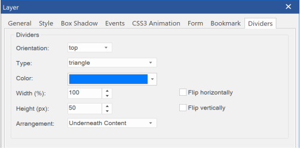

Shape Dividers
Shape dividers are SVG based shapes that can be used to separate the sections of a page. Shape divider are available in layers, layout grids and the flex box container. The dividers can be added at the top or bottom (or both) of a layer.
There are more than 30 shapes you can choose from, but you can also add custom shape SVG files.
Shape dividers are SVG based shapes that can be used to separate the sections of a page. Shape divider are available in layers, layout grids and the flex box container. The dividers can be added at the top or bottom (or both) of a layer.
There are more than 30 shapes you can choose from, but you can also add custom shape SVG files.
Orientation
Shape dividers can be added at the top or bottom (or both) of a layer, layout grid or flexbox container.
The Orientation property determines which side is currently edited. For example, if you want to set a divider at the bottom then first select 'bottom' and next set the properties. If the type is set to none, the divider will be disabled for the selected side.
Color
The color specifies the color of the shape.
Width
The width specifies the width in percentages, this can be useful if you only want to display a smaller part of the shape, for example 200%, clips the left and right part of the shape.
Example (100%)
Shape dividers can be added at the top or bottom (or both) of a layer, layout grid or flexbox container.
The Orientation property determines which side is currently edited. For example, if you want to set a divider at the bottom then first select 'bottom' and next set the properties. If the type is set to none, the divider will be disabled for the selected side.
Color
The color specifies the color of the shape.
Width
The width specifies the width in percentages, this can be useful if you only want to display a smaller part of the shape, for example 200%, clips the left and right part of the shape.
Example (100%)

Divider properties
Adding custom shapes
Shapes dividers are SVG files and are stored in the sub folder 'dividers' of the system folder.
Usually, this is C:\Users\Username\Documents\WYSIWYG Web Builder\system\dividers
The code of a typical SVG shape looks like this:
<svg xmlns="http://www.w3.org/2000/svg" viewBox="0 0 1000 100" preserveAspectRatio="none">
<path class="divider-fill" d="M500,50 C350,48 250,250 0,250 V0.3 h500 z"></path>
</svg>
Note that the path has a class named divider-fill, this is used by the application for styling the shape and should be included in all paths or shapes.
For inspiration how to create your own shapes, please take a look at the code of the standard shapes .
Demo
https://www.wysiwygwebbuilder.com/support/wb15tryouts/dividers-demo.html
Shapes dividers are SVG files and are stored in the sub folder 'dividers' of the system folder.
Usually, this is C:\Users\Username\Documents\WYSIWYG Web Builder\system\dividers
The code of a typical SVG shape looks like this:
<svg xmlns="http://www.w3.org/2000/svg" viewBox="0 0 1000 100" preserveAspectRatio="none">
<path class="divider-fill" d="M500,50 C350,48 250,250 0,250 V0.3 h500 z"></path>
</svg>
Note that the path has a class named divider-fill, this is used by the application for styling the shape and should be included in all paths or shapes.
For inspiration how to create your own shapes, please take a look at the code of the standard shapes .
Demo
https://www.wysiwygwebbuilder.com/support/wb15tryouts/dividers-demo.html
Height
The height is in pixels.
Flip
Shapes can be flipped horizontally/vertically. This makes it possible to use shapes that were designed to be used at the top, also at the bottom by flipping it vertically.
The height is in pixels.
Flip
Shapes can be flipped horizontally/vertically. This makes it possible to use shapes that were designed to be used at the top, also at the bottom by flipping it vertically.
Example (400%)
Arrangement
The arrangement property controls whether the shape will be displayed underneath the content or on top of content.
The arrangement property controls whether the shape will be displayed underneath the content or on top of content.
Flipped vertically